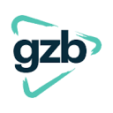

Conversation 812
GWB USA
Prompt 1 · You
gzwb usa
Response 1 · Google AI Mode
It looks like there might be a minor typo in your acronym, as "GZWB" does not correspond to a major known entity or organization in the United States.
Depending on your original intent, you might be looking for one of the following terms:
1. GWB (George W. Bush)
If you are researching US politics, this is the standard abbreviation for the 43rd US President, George W. Bush. It is also used for the George Washington Bridge connecting New York and New Jersey.
2. GZB (Gereformeerde Zendingsbond)
If your query is related to the Netherlands (given the local context), GZB is a well-known Dutch Protestant missionary organization. While it operates in about 30 countries globally, it partners with international church networks rather than having a primary base called "GZB USA".

GZB +13. WZWB or WZZB (US Radio Stations)
If you are looking for broadcast media, WZWB is a Fox Sports Radio station operating in the Huntington, West Virginia market, while WZZB is a classic hits radio station based in Indiana.  Wikipedia +1
Wikipedia +1
Wikipedia +14. Electronic Components & Retail
If you are searching for an online product identifier, "GZWB" sometimes appears in manufacturing part names (like electronic relay modules on global wholesale sites) or as a random supplier suffix on retail platforms like Shein USA.
Alibaba.com +1
To help point you in the right direction, could you let me know:
- What context did you see this acronym in (e.g., politics, business, electronics, religion)?
- Is it possible the letters were slightly arranged differently (like GWB, GSB, or ZWBA)?
Source links preserved from this response
- GZB
https://www.gzb.nl/en - www.gzb.nl
https://www.gzb.nl/en/what-inspires-us - WZWB
https://en.wikipedia.org/wiki/WZWB - en.wikipedia.org
https://en.wikipedia.org/wiki/WZZB - Shein USA
https://us.shein.com/ - www.alibaba.com
https://www.alibaba.com/product-detail/4-5V-12V24V-relay-module-30A_1601056959110.html
Prompt 2 · You
shein on GH ragnarok online HWB
Response 2 · Google AI Mode
It looks like your query is combining shorthand from Ragnarok Online (RO) mechanics with other shorthand abbreviations. In the context of Ragnarok Online, we can break down "GH" and "HWB":
1. GH (Glast Heim)
In Ragnarok Online, GH almost always stands for Glast Heim, one of the game's most iconic and extensive endgame dungeons.
iRO Wiki +1
- Old Glast Heim (OGH): A highly popular Level 130+ daily instance where players farm Temporal Crystals and Coagulated Spells to craft powerful Temporal Boots. iRO Wiki
- GH Churchyard / Chivalry: Classic open-world maps within Glast Heim famously used for "heal bombing" Evil Druids or hunting MVPs like Dark Lord.
 YouTube·Amber Evelyn +1
YouTube·Amber Evelyn +1
2. HWB (Holy Water Bomb / Weapon Buffs)
Depending on what class or build you are using in
Glast Heim, HWB typically points to tactical combat shorthand:
- Holy Water Bombing (Heal Bombing): An old-school but effective strategy where Priests/Acolytes use holy skills or items to quickly defeat the massive amounts of Undead and Demon monsters (like Wraiths and Ghouls) found all over Glast Heim. YouTube·Amber Evelyn +1
- Holy Weapon Buff: Glast Heim monsters are heavily weak to Holy elemental damage. Characters often rely on Aspersio (a Priest skill that imbues weapons with the Holy property using Holy Water) to maximize their damage output. iRO Wiki
3. The "Shein" Factor
"Shein" does not exist as an official mechanic, item, or NPC within Ragnarok Online. However, players frequently use names like this for:
- Player Shop Names / Vending: Private server or official server players setting up shop in town (like Prontera) often name their chat pubs or vending shops after real-world fast-fashion brands (e.g., "SHEIN - Cheap Costumes") when selling cheap gear, visual headgears, or clothing dyes.
- Player Ign (In-Game Name): A character or party leader running Glast Heim instances.
Source links preserved from this response
- irowiki.org
https://irowiki.org/wiki/Old_Glast_Heim - www.youtube.com
https://www.youtube.com/watch?v=0qpRrzf88xw&t=82